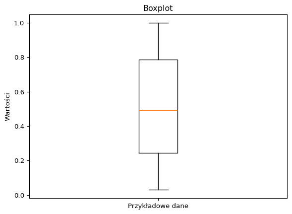
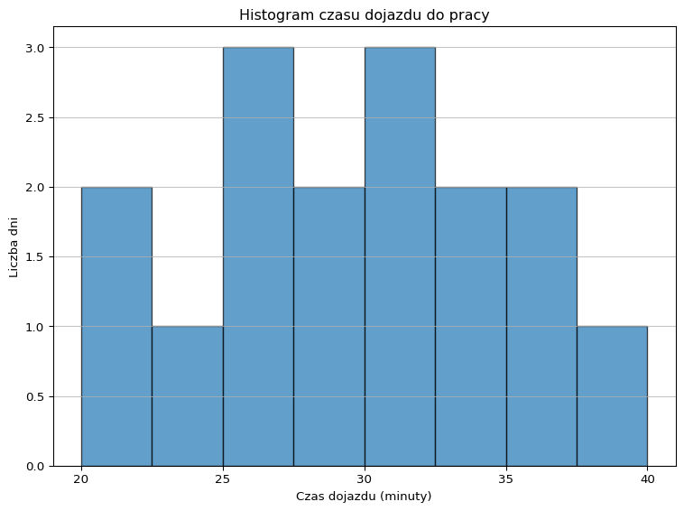
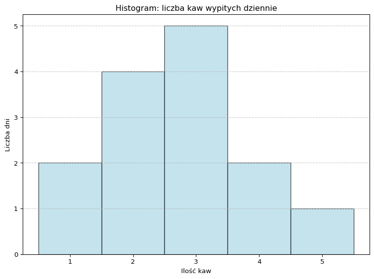

import matplotlib.pyplot as plt
# Dane
sizes = [20, 30, 40, 10]
labels = ['Kategoria A', 'Kategoria B', 'Kategoria C', 'Kategoria D']
colors = ['red', 'blue', 'green', 'yellow']
explode = (0, 0.1, 0, 0) # Wyróżnienie segmentu Kategoria B
# Tworzenie wykresu kołowego
plt.pie(sizes, explode=explode, labels=labels, colors=colors, autopct='%1.1f%%', shadow=True, startangle=90)
# Dodanie tytułu
plt.title('Przykład wykresu kołowego')
# Równomierne skalowanie osi X i Y, aby koło było okrągłe
plt.axis('equal')
plt.show(block=True)37 Matplotlib - inne wykresy
37.1 Wykres kołowy
Wykres kołowy (pie chart) jest stosowany, gdy chcemy przedstawić proporcje różnych kategorii lub segmentów w stosunku do całości. Jest szczególnie użyteczny, gdy mamy niewielką liczbę kategorii (zazwyczaj nie więcej niż 5-7) oraz gdy dane są jakościowe (kategoryczne). Wykres kołowy pozwala na wizualne zrozumienie udziałów procentowych poszczególnych kategorii w ramach całego zbioru danych.
Przykłady danych, dla których stosuje się wykres kołowy:
- Struktura wydatków domowych, gdzie kategorie to: mieszkanie, jedzenie, transport, rozrywka, inne.
- Procentowy udział w rynku różnych firm w danej branży.
- Rozkład głosów na partie polityczne w wyborach.
- Procentowy udział różnych rodzajów energii w produkcji energii elektrycznej (węgiel, gaz, energia odnawialna, energia jądrowa itp.).
Chociaż wykresy kołowe mają swoje zastosowania, są również krytykowane za ograniczoną precyzję w ocenie proporcji. Dlatego często zaleca się stosowanie innych rodzajów wykresów, takich jak słupkowe (bar chart) czy stosunkowe (stacked bar chart), które mogą być bardziej przejrzyste i precyzyjne w porównywaniu wartości między kategoriami.
Funkcja pie służy do tworzenia wykresów kołowych. Pozwala na wizualne przedstawienie proporcji różnych segmentów względem całości.
Składnia funkcji to plt.pie(x, explode=None, labels=None, colors=None, autopct=None, shadow=False, startangle=0, counterclock=True), gdzie:
x- lista wartości numerycznych, reprezentująca dane dla każdego segmentu. Funkcjapieautomatycznie obliczy procentowe udziały każdej wartości względem sumy wszystkich wartości.explode- lista wartości, które określają, czy (i jak bardzo) każdy segment ma być oddzielony od środka wykresu. Wartość 0 oznacza brak oddzielenia, a wartości większe oznaczają większe oddzielenie.labels- lista ciągów znaków, które będą używane jako etykiety segmentów.colors- lista kolorów dla poszczególnych segmentów.autopct- formatowanie procentów, które mają być wyświetlane na wykresie (np.'%1.1f%%').shadow- wartość logiczna (True/False), która określa, czy wykres ma mieć cień. Domyślnie ustawione naFalse.startangle- kąt początkowy wykresu kołowego, mierzony w stopniach przeciwnie do ruchu wskazówek zegara od osi X.counterclock- wartość logiczna (True/False), która określa, czy segmenty mają być rysowane zgodnie z ruchem wskazówek zegara. Domyślnie ustawione naTrue.

import matplotlib.pyplot as plt
# Pie chart, where the slices will be ordered and plotted counter-clockwise:
labels = ['Frogs', 'Hogs', 'Dogs', 'Logs']
sizes = [15, 30, 45, 10]
explode = [0, 0.1, 0, 0] # only "explode" the 2nd slice (i.e. 'Hogs')
fig1, ax1 = plt.subplots()
ax1.pie(sizes, explode=explode, labels=labels, autopct='%1.1f%%',
shadow=True, startangle=90)
ax1.axis('equal') # Equal aspect ratio ensures that pie is drawn as a circle.
plt.show(block=True)import matplotlib.pyplot as plt
# Pie chart, where the slices will be ordered and plotted counter-clockwise:
labels = ['Frogs', 'Hogs', 'Dogs', 'Logs']
sizes = [15, 30, 45, 10]
explode = [0, 0.1, 0, 0] # only "explode" the 2nd slice (i.e. 'Hogs')
plt.pie(sizes, explode=explode, labels=labels, autopct='%1.1f%%',
shadow=True, startangle=90)
plt.axis('equal')
plt.show(block=True)
import matplotlib.pyplot as plt
import numpy as np
# Dane
sizes = [20, 30, 40, 10]
labels = ['Kategoria A', 'Kategoria B', 'Kategoria C', 'Kategoria D']
n = len(sizes)
# Tworzenie mapy kolorów
cmap = plt.get_cmap('viridis')
colors = [cmap(i) for i in np.linspace(0, 1, n)]
# Tworzenie wykresu kołowego
plt.pie(sizes, labels=labels, colors=colors, autopct='%1.1f%%', startangle=90)
# Dodanie tytułu
plt.title('Przykład wykresu kołowego z mapą kolorów')
# Równomierne skalowanie osi X i Y, aby koło było okrągłe
plt.axis('equal')
plt.show(block=True)37.2 Wykres dwuosiowy
Funkcja twinx w bibliotece Matplotlib pozwala na utworzenie drugiej osi Y, która będzie współdzielić oś X z pierwszą osią Y. Dzięki temu, można w prosty sposób przedstawić dwie serie danych, które są mierzne w różnych jednostkach, ale mają wspólną zmienną niezależną.
Składnia funkcji to twinx(ax=None, **kwargs), gdzie:
ax- obiekt Axes, który ma być użyty do tworzenia nowej osi Y. Domyślnie ustawione naNone, co oznacza, że będzie tworzona nowa osie Y.**kwargs- dodatkowe argumenty dotyczące formatowania nowej osi Y.
import numpy as np
import matplotlib.pyplot as plt
fig, ax1 = plt.subplots()
x = np.arange(0.01, 10.0, 0.01)
y = x ** 2
ax1.plot(x, y, 'r')
ax2 = ax1.twinx()
y2 = np.sin(x)
ax2.plot(x, y2)
fig.tight_layout()
plt.show(block=True)
import numpy as np
import matplotlib.pyplot as plt
fig, ax1 = plt.subplots()
t = np.arange(0.01, 10.0, 0.01)
s1 = np.exp(t)
ax1.plot(t, s1, 'b-')
ax1.set_xlabel('time (s)')
ax1.set_ylabel('exp', color='b')
ax1.tick_params('y', colors='b')
ax2 = ax1.twinx()
s2 = np.sin(2 * np.pi * t)
ax2.plot(t, s2, 'r.')
ax2.set_ylabel('sin', color='r')
ax2.tick_params('y', colors='r')
fig.tight_layout()
plt.show(block=True)37.3 Wykres słupkowy
Wykres słupkowy jest stosowany do przedstawiania danych kategorialnych lub dyskretnych. Jest to powszechnie używany rodzaj wykresu, który pomaga wizualnie porównać wartości lub ilości dla różnych kategorii. Oto kilka typów danych, dla których wykres słupkowy może być stosowany:
- Częstości: Wykres słupkowy jest używany do przedstawiania liczby wystąpień różnych kategorii, takich jak wyniki ankiety, preferencje konsumentów lub różne grupy ludności.
- Proporcje: Można go stosować do przedstawiania udziału procentowego poszczególnych kategorii w całości, np. udział rynkowy różnych firm, procentowe wyniki testów czy procentowy rozkład ludności według wieku.
- Wartości liczbowe: Wykres słupkowy może przedstawiać wartości liczbowe związane z różnymi kategoriami, np. sprzedaż produktów, przychody z różnych źródeł czy średnią temperaturę w różnych miastach.
- Danych szeregów czasowych: Wykres słupkowy może być również używany do przedstawiania danych szeregów czasowych w przypadku, gdy zmiany występują w regularnych odstępach czasu, np. roczna sprzedaż, miesięczne opady czy tygodniowe przychody.
Warto zauważyć, że wykresy słupkowe są odpowiednie, gdy mamy do czynienia z niewielką liczbą kategorii, ponieważ zbyt wiele słupków na wykresie może sprawić, że stanie się on trudny do interpretacji. W takich przypadkach warto rozważyć inne typy wykresów, takie jak wykres kołowy lub stosunkowy.
Funkcja bar w bibliotece Matplotlib służy do tworzenia wykresów słupkowych (bar chart). Wykresy słupkowe są często stosowane, gdy chcemy porównać wartości różnych kategorii.
Składnia funkcji to plt.bar(x, height, width=0.8, bottom=None, align='center', data=None, **kwargs), gdzie:
x- pozycje słupków na osi X. Może to być sekwencja wartości numerycznych lub lista etykiet, które będą umieszczone na osi X.height- wysokość słupków.width- szerokość słupków.bottom- położenie dolnej krawędzi słupków. Domyślnie ustawione naNone, co oznacza, że słupki zaczynają się od zera.align- sposób wyśrodkowania słupków wzdłuż osi X. Domyślnie ustawione na ‘center’.data- obiekt DataFrame, który zawiera dane do wykresu.**kwargs- dodatkowe argumenty dotyczące formatowania wykresu, takie jak kolor, przezroczystość, etykiety osi, tytuł i legendę.
import matplotlib.pyplot as plt
# Dane
kategorie = ['Kategoria 1', 'Kategoria 2', 'Kategoria 3']
wartosci = [10, 20, 15]
# Tworzenie wykresu słupkowego
plt.bar(kategorie, wartosci, color='green', alpha=0.5)
# Dodanie tytułu i etykiet osi
plt.title('Wykres słupkowy')
plt.xlabel('Kategorie')
plt.ylabel('Wartości')
# Wyświetlenie wykresu
plt.show(block=True)
import numpy as np
import matplotlib.pyplot as plt
wys = [10, 15, 18, 22, 27]
x = np.arange(0, len(wys))
k = ["black", "red", "green", "yellow", "pink"]
plt.bar(x, wys, color=k, width=0.75)
etyk = ["Kategoria A", "Kategoria B", "Kategoria C", "Kategoria D", "Kategoria E"]
plt.xticks(x, etyk, rotation=45)
y2 = [20, 30, 40, 50, 60]
plt.plot(x, y2)
plt.title("tytulik")
plt.tight_layout()
plt.show(block=True)import numpy as np
import matplotlib.pyplot as plt
height = [3, 12, 5, 18, 45]
bars = ('A', 'B', 'C', 'D', 'E')
y_pos = np.arange(len(bars))
plt.bar(y_pos, height, color=['black', 'red', 'green', 'blue', 'cyan'])
plt.xticks(y_pos, bars)
plt.show(block=True)import numpy as np
import matplotlib.pyplot as plt
data = [[30, 25, 50, 20],
[40, 23, 51, 17],
[35, 22, 45, 19]]
X = np.arange(4)
plt.bar(X + 0.00, data[0], color='b', width=0.25, label="A")
plt.bar(X + 0.25, data[1], color='g', width=0.25, label="B")
plt.bar(X + 0.50, data[2], color='r', width=0.25, label="C")
labelsbar = np.arange(2015, 2019)
plt.xticks(X + 0.25, labelsbar)
plt.legend()
plt.show(block=True)import numpy as np
import matplotlib.pyplot as plt
N = 5
boys = (20, 35, 30, 35, 27)
girls = (25, 32, 34, 20, 25)
ind = np.arange(N)
width = 0.35
plt.bar(ind, boys, width, label="boys")
plt.bar(ind, girls, width, bottom=boys, label="girls")
plt.ylabel('Contribution')
plt.title('Contribution by the teams')
plt.xticks(ind, ('T1', 'T2', 'T3', 'T4', 'T5'))
plt.yticks(np.arange(0, 81, 10))
plt.legend()
plt.show(block=True)
Funkcja barh służy do tworzenia wykresów słupkowych horyzontalnych (horizontal bar chart). Wykresy słupkowe horyzontalne są często stosowane, gdy chcemy porównać wartości różnych kategorii, a etykiety na osi X są długie lub są bardzo liczne.
Składnia funkcji to plt.barh(y, width, height=0.8, left=None, align='center', data=None, **kwargs), gdzie:
y- pozycje słupków na osi Y. Może to być sekwencja wartości numerycznych lub lista etykiet, które będą umieszczone na osi Y.width- szerokość słupków.height- wysokość słupków.left- położenie lewej krawędzi słupków. Domyślnie ustawione naNone, co oznacza, że słupki zaczynają się od zera.align- sposób wyśrodkowania słupków wzdłuż osi Y. Domyślnie ustawione na ‘center’.data- obiekt DataFrame, który zawiera dane do wykresu.**kwargs- dodatkowe argumenty dotyczące formatowania wykresu, takie jak kolor, przezroczystość, etykiety osi, tytuł i legenda.
import matplotlib.pyplot as plt
# Dane
kategorie = ['Kategoria 1', 'Kategoria 2', 'Kategoria 3']
wartosci = [10, 20, 15]
# Tworzenie wykresu słupkowego horyzontalnego
plt.barh(kategorie, wartosci, color='green', alpha=0.5)
# Dodanie tytułu i etykiet osi
plt.title('Wykres słupkowy horyzontalny')
plt.xlabel('Wartości')
plt.ylabel('Kategorie')
# Wyświetlenie wykresu
plt.show(block=True)
import numpy as np
import matplotlib.pyplot as plt
width = [3, 12, 5, 18, 45]
bars = ('A', 'B', 'C', 'D', 'E')
x_pos = np.arange(len(bars))
plt.barh(x_pos, width, color=['black', 'red', 'green', 'blue', 'cyan'])
plt.yticks(x_pos, bars)
plt.show(block=True)
import numpy as np
import matplotlib.pyplot as plt
data = [[30, 25, 50, 20],
[40, 23, 51, 17],
[35, 22, 45, 19]]
Y = np.arange(4)
plt.barh(Y + 0.00, data[0], color='b', height=0.25, label="A")
plt.barh(Y + 0.25, data[1], color='g', height=0.25, label="B")
plt.barh(Y + 0.50, data[2], color='r', height=0.25, label="C")
labelsbar = np.arange(2015, 2019)
plt.yticks(Y + 0.25, labelsbar)
plt.legend()
plt.show(block=True)import numpy as np
import matplotlib.pyplot as plt
N = 5
boys = (20, 35, 30, 35, 27)
girls = (25, 32, 34, 20, 25)
ind = np.arange(N)
height = 0.35
plt.barh(ind, boys, height, label="boys")
plt.barh(ind, girls, height, left=boys, label="girls")
plt.xlabel('Contribution')
plt.title('Contribution by the teams')
plt.yticks(ind, ('T1', 'T2', 'T3', 'T4', 'T5'))
plt.xticks(np.arange(0, 81, 10))
plt.legend()
plt.show(block=True)import pandas as pd
import matplotlib.pyplot as plt
# Tworzenie przykładowej ramki danych
data = {
'Grupa': ['Grupa A', 'Grupa B', 'Grupa C', 'Grupa D'],
'Mężczyźni': [20, 35, 30, 35],
'Kobiety': [25, 32, 34, 20]
}
df = pd.DataFrame(data)
# Ustawienie indeksu na kolumnę 'Grupa'
df.set_index('Grupa', inplace=True)
# Tworzenie wykresu
ax = df.plot(kind='bar', width=0.8)
# Dodanie etykiet, tytułu i legendy
ax.set_ylabel('Wyniki')
ax.set_title('Wyniki według grup i płci')
ax.set_xticklabels(df.index, rotation=0)
ax.legend(title='Płeć')
plt.tight_layout()
plt.show(block=True)
import pandas as pd
import matplotlib.pyplot as plt
import numpy as np
# Tworzenie przykładowej ramki danych
data = {
'Grupa': ['Grupa A', 'Grupa B', 'Grupa C', 'Grupa D'],
'Mężczyźni': [20, 35, 30, 35],
'Kobiety': [25, 32, 34, 20]
}
df = pd.DataFrame(data)
# Ustawienie indeksu na kolumnę 'Grupa'
df.set_index('Grupa', inplace=True)
# Tworzenie wykresu
fig, ax = plt.subplots()
# Słupki dla mężczyzn
rects1 = ax.bar(df.index, df['Mężczyźni'], label='Mężczyźni')
# Słupki dla kobiet, nałożone na słupki dla mężczyzn
rects2 = ax.bar(df.index, df['Kobiety'], bottom=df['Mężczyźni'], label='Kobiety')
# Dodanie etykiet, tytułu i legendy
ax.set_ylabel('Wyniki')
ax.set_title('Wyniki według grup i płci')
ax.legend()
plt.tight_layout()
plt.show(block=True)
37.4 Wykres pudełkowy
Wykres pudełkowy (inaczej box plot) jest stosowany do przedstawiania informacji o rozkładzie danych liczbowych oraz do identyfikacji wartości odstających. Jest szczególnie przydatny w przypadku analizy danych ciągłych, które mają różne wartości i rozkłady. Oto kilka typów danych, dla których wykres pudełkowy może być stosowany:
Porównanie grup: Wykres pudełkowy jest używany do porównywania rozkładu danych między różnymi grupami. Na przykład, można go użyć do porównania wyników testów uczniów z różnych szkół, wynagrodzeń w różnych sektorach czy wartości sprzedaży różnych produktów.
Identyfikacja wartości odstających: Wykres pudełkowy jest używany do identyfikacji wartości odstających (outlierów) w danych, które mogą wskazywać na błędy pomiarowe, nietypowe obserwacje lub wartości ekstremalne. Na przykład, może to być użyte do wykrywania anomalii w danych meteorologicznych, wartościach giełdowych czy danych medycznych.
Analiza rozkładu: Wykres pudełkowy pomaga zrozumieć rozkład danych, takich jak mediana, kwartyle, zakres wartości i potencjalne wartości odstające. Może to być użyte w analizie danych takich jak oceny, wzrost ludności, wartość akcji czy ceny nieruchomości.
Wizualizacja wielowymiarowych danych: Wykres pudełkowy może być używany do wizualizacji wielowymiarowych danych, przedstawiając rozkład wielu zmiennych na jednym wykresie. Na przykład, można porównać zmienne takie jak wiek, zarobki i wykształcenie w badaniu demograficznym.
Warto zauważyć, że wykres pudełkowy jest szczególnie przydatny, gdy chcemy zrozumieć rozkład danych, ale nie pokazuje on konkretnej liczby obserwacji ani wartości indywidualnych punktów danych. W takich przypadkach inne rodzaje wykresów, takie jak wykres punktowy, mogą być bardziej odpowiednie.
Wykres pudełkowy pokazuje pięć statystyk opisowych danych: minimum, pierwszy kwartyl (Q1), medianę, trzeci kwartyl (Q3) i maksimum.
import matplotlib.pyplot as plt
import numpy as np
# Przykładowe dane
data = np.random.rand(100)
# Tworzenie wykresu
fig, ax = plt.subplots()
# Rysowanie boxplota
ax.boxplot(data)
# Dodanie opisów
ax.set_title('Boxplot')
ax.set_ylabel('Wartości')
ax.set_xticklabels(['Przykładowe dane'])
# Wyświetlanie wykresu
plt.show(block=True)
import matplotlib.pyplot as plt
import numpy as np
# Creating dataset
np.random.seed(10)
data = np.random.normal(100, 20, 200)
# Creating plot
plt.boxplot(data)
# show plot
plt.show(block=True)
37.5 Histogram
Wykres histogramu jest stosowany do przedstawiania rozkładu danych liczbowych, zarówno ciągłych, jak i dyskretnych. Histogram pokazuje częstość występowania danych w określonych przedziałach (binach), co pozwala na analizę dystrybucji i identyfikację wzorców. Oto kilka typów danych, dla których histogram może być stosowany:
Analiza rozkładu: Histogram może być używany do analizy rozkładu danych, takich jak oceny, ceny, wartości akcji, wzrost ludności czy dane meteorologiczne. Pozwala to zrozumieć, jak dane są rozłożone, czy są skoncentrowane wokół pewnych wartości, czy mają długi ogon (tj. czy występują wartości odstające).
Identyfikacja tendencji: Histogram może pomóc w identyfikacji tendencji lub wzorców w danych. Na przykład, można użyć histogramu do identyfikacji sezonowych wzorców sprzedaży, zmian w wartościach giełdowych czy wzorców migracji ludności.
Porównanie grup: Histogram może być również używany do porównywania rozkładu danych między różnymi grupami. Na przykład, można go użyć do porównania wyników testów uczniów z różnych szkół, wynagrodzeń w różnych sektorach czy wartości sprzedaży różnych produktów.
Szacowanie parametrów: Histogram może pomóc w szacowaniu parametrów rozkładu, takich jak średnia, mediana czy wariancja, co może być użyteczne w analizie statystycznej.
Warto zauważyć, że histogram jest odpowiedni dla danych liczbowych, ale nie jest przeznaczony do przedstawiania danych kategorialnych. W takich przypadkach inne rodzaje wykresów, takie jak wykres słupkowy, mogą być bardziej odpowiednie.
import matplotlib.pyplot as plt
x = [1, 1, 2, 3, 3, 5, 7, 8, 9, 10,
10, 11, 11, 13, 13, 15, 16, 17, 18, 18]
plt.hist(x, bins=4)
plt.show(block=True)
import pandas as pd
import matplotlib.pyplot as plt
ages = [20, 22, 25, 27, 21, 23, 37, 31, 61, 45, 41, 32]
bins = [18, 25, 35, 60, 100]
cats2 = pd.cut(ages, [18, 26, 36, 61, 100], right=False)
print(cats2)
group_names = ['Youth', 'YoungAdult',
'MiddleAged', 'Senior']
data = pd.cut(ages, bins, labels=group_names)
plt.hist(data)
plt.show(block=True)[[18, 26), [18, 26), [18, 26), [26, 36), [18, 26), ..., [26, 36), [61, 100), [36, 61), [36, 61), [26, 36)]
Length: 12
Categories (4, interval[int64, left]): [[18, 26) < [26, 36) < [36, 61) < [61, 100)]
import matplotlib.pyplot as plt
ages = [20, 22, 25, 27, 21, 23, 37, 31, 61, 45, 41, 32]
bins = [18, 25, 35, 60, 100]
plt.hist(ages, bins=bins)
plt.show(block=True)
import matplotlib.pyplot as plt
x = [1, 1, 2, 3, 3, 5, 7, 8, 9, 10,
10, 11, 11, 13, 13, 15, 14, 12, 18, 18]
plt.hist(x, bins=[0, 5, 10, 15, 20])
plt.xticks([0, 5, 10, 15, 20])
plt.show(block=True)
import matplotlib.pyplot as plt
x = [1, 1, 2, 3, 3, 5, 7, 8, 9, 10,
10, 11, 11, 13, 13, 15, 14, 12, 18, 18]
plt.hist(x, bins=[0, 5, 10, 15, 20], cumulative=True)
plt.xticks([0, 5, 10, 15, 20])
plt.show(block=True)
import matplotlib.pyplot as plt
x = [1, 1, 2, 3, 3, 5, 7, 8, 9, 10,
10, 11, 11, 13, 13, 15, 14, 12, 18, 18]
plt.hist(x, bins=[0, 5, 10, 15, 20], density=True)
plt.xticks([0, 5, 10, 15, 20])
plt.show(block=True)
37.6 Wykres pierścieniowy
import matplotlib.pyplot as plt
import numpy as np
np.random.seed(345)
data = np.random.randint(20, 100, 6)
total = sum(data)
data_per = data / total * 100
explode = (0.2, 0, 0, 0, 0, 0)
plt.pie(data_per, explode=explode, labels=[round(i, 2) for i in list(data_per)])
circle = plt.Circle((0, 0), 0.7, color='white')
p = plt.gcf()
p.gca().add_artist(circle)
plt.show(block=True)
37.7 Wykresy w przestrzeni
37.7.1 Helisa
\[\begin{cases} x=a\cos (t) \\ y=a\sin(t) \\ z=at \end{cases}\]
import numpy as np
import matplotlib.pyplot as plt
fig = plt.figure()
ax = plt.axes(projection='3d')
t = np.linspace(0, 15, 1000)
a = 3
xline = a * np.sin(t)
yline = a * np.cos(t)
zline = a * t
ax.plot3D(xline, yline, zline)
plt.show(block=True)
37.7.2 Torus
\[p(\alpha,\ \beta)=\Big((R+r\cos \alpha)\cos \beta,\ (R+r\cos \alpha)\sin \beta,\ r\sin \alpha\Big)\]
import numpy as np
import matplotlib.pyplot as plt
fig = plt.figure()
ax = plt.axes(projection='3d')
r = 1
R = 5
alpha = np.arange(0, 2 * np.pi, 0.1)
beta = np.arange(0, 2 * np.pi, 0.1)
alpha, beta = np.meshgrid(alpha, beta)
x = (R + r * np.cos(alpha)) * np.cos(beta)
y = (R + r * np.cos(alpha)) * np.sin(beta)
z = r * np.sin(alpha)
ax.plot_wireframe(x, y, z)
plt.show(block=True)